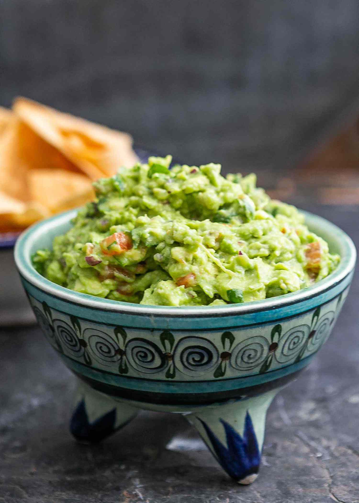

Description
Guacamole is an avocado-based dip or spread that
originated in Mexico. It's typically made with
mashed avocado and lime juice, then seasoned with
salt and cilantro. Guacamole often contains tomatoes
and onions.
Ingredients
- Avocados
- Lime
- Salt
- Vegetables
- Herbs and Spices
Steps
- Mash avocados, lime juice, and salt together in a
medium bowl; mix in tomatoes, onion, cilantro, and
garlic. Stir in cayenne pepper.
- Serve immediately, or cover and refrigerate for
1 hour for improved flavor.